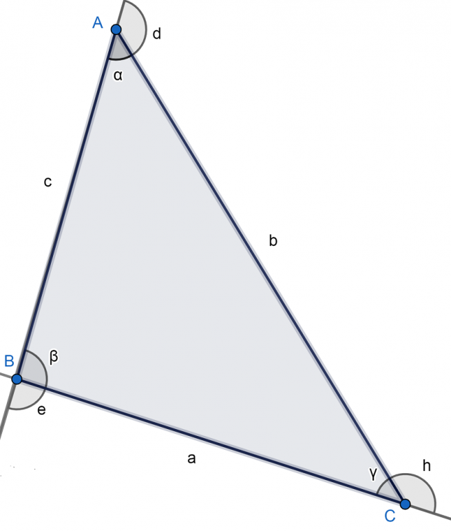

Triángulo Obtusángulo
El triángulo obtusángulo es aquel donde uno de sus ángulos interiores es obtuso, es decir, mayor que 90º. Asimismo, los otros dos ángulos son agudos, lo que significa que miden menos de 90º. Este tipo de triángulo es un caso muy particular dentro de los tipos de triángulo según la medida de sus ángulos internos.
Elemetos del triángulo obtusángulo
Vértices: A, B, C.
Lados: AB, BC, AC.
Ángulos interiores: ∝, β, γ. Todos suman 180º.
Ángulos exteriores: e, d, h. Cada uno es suplementario al ángulo interior del mismo vértice. Es decir, se cumple que: 180º= ∝+d= β+e= h+γ. Lo anterior implica que dos de los ángulos exteriores son obtusos y uno es agudo (el que se corresponde con el ángulo interior obtuso). Si β mide 92º, por ejemplo, e mediría 88º.

Tipos de triángulo obtusángulo
Los tipos de triángulo obtusángulo, según la medida de sus lados, son los siguientes:
Isósceles: Dos de sus lados miden lo mismo y el otro es distinto.
Escaleno: Todos sus lados y ángulos interiores son diferentes.
Perímetro y área del triángulo obtusángulo
Las características del triángulo obtusángulo se pueden medir en base a las siguientes fórmulas:
Perímetro(P): Es la suma de los lados que, observando la figura de arriba donde señalamos los elementos, sería: P = a + b + c.
Área(A): En este caso, nos basamos en la fórmula de Herón donde s es el semiperímetro, es decir, P/2.